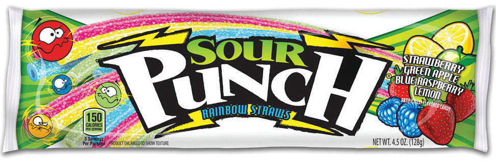

Lab 12 - Conditionals
Challenge
For this assignment we had no challenges despite working days after the lecture. We went back and forth on different concepts we wanted to do with this assignment but eventually picked one we thought was really cute!
Problems
We didn’t face any face problems. We used the canvas assignment as reference and tested out the code in the console first before committing!
Reflection
Overall, we really liked being able to explore the different things that can happen within this assignment, we added a butt load of CSS and just had a lot of fun editing the website!
Results
What artificial flavor are you?
Preference aside, this flavor was chosen by the unvierse to describe you.
Please enter your full name for tasting: